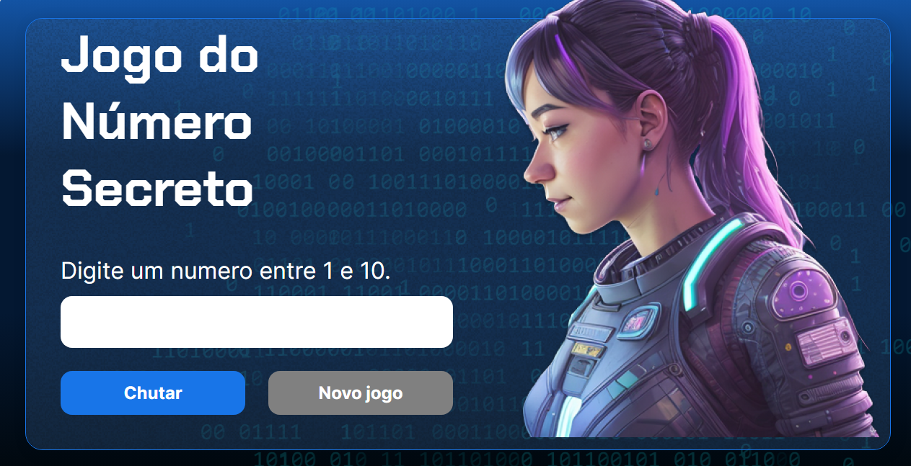

Numero Secreto
O jogador precisa acertar o número gerado entre 1 e 10, a cada tentava é verificado se o número é maior ou menor doque o jogador informou.
O jogador precisa acertar o número gerado entre 1 e 10, a cada tentava é verificado se o número é maior ou menor doque o jogador informou.